import numpy as np
# simulated dataset
np.random.seed(1)
x = np.linspace(0, 10, 100)6 Nonlinearity
6.1 Kernel Basis Expansion Method
6.1.1 General Info on Linear Models
One principal factor in understanding that linear models \(\neq\) linear relationship is that the “linear” in linear model refers to the linearity in the parameters \(\beta\), not in the predictors \(x\). Basis expansion is one way to use a linear model to find understand relationships between nonlinear variables. Basis expansion does this by adding additional functions of \(x\) to the linear model. Consider the standard linear model and its variance. \[ E[Y \mid x] = \beta_0 + \sum_{i=1}^{n} \beta_i x_i \] \[ \operatorname{Var}(Y \mid x) = \sigma^2 I \]
When using basis expansion, \(x\) is transformed into a set of derived features \(b_1(x), b_2(x), \ldots, b_k(x)\). Then the linear model can be re-written as follows: \[ E[Y \mid x] = \beta_0 + \sum_{i=1}^{n} \beta_i b_i(x) \]
6.1.2 Kernels
Kernel basis functions are the same function \(K\), placed at different locations in the range of \(x\), also called knots. The knot locations can be denoted by \(c_1, \ldots, c_M\). The basis functions for kernels take the following form. \[ b_i(x) = K (x - c_i) \] where, \(K(x)\) is a kernel function
Kernel basis functions are typically symmetric and continuous. A common choice is the Gaussian kernel, \(K(u) = e^{-u^2/2}\).
Kernel functions also typically use a hyperparameter, \(h\) to consider the basis functions at wider or narrower scales. The kernel basis function can be re-written in the following form with the hyperparameter. \[ b_i(x) = K\left(\frac{x-c_i}{h}\right) \]
This kernel function can then be substituted into the linear model as the following. \[ E[Y \mid x] = \beta_0 + \sum_{i=1}^{n} \beta_i K\left(\frac{x-c_i}{h}\right) \]
Linear combinations of multiple kernel functions can be used in a model, depending on the dataset. At the tails of the dataset, the model reverts back to a value of \(\beta_0\).
Many different equations can be used for the kernel function, including any function proportional to a density function.
A plot was also created to show how kernel functions sum to create the regression equation. For this example, 3 kernel functions were used. First, a simulated dataset was created from 0 to 10.
Next, 3 kernel functions were created by defining their centers, c, widths, h, and using a Gaussian equation. The 3 kernel functions were summed to simulate a regression plot.
# select three kernel centers
c_1 = 2
c_2 = 4
c_3 = 6
# select kernel widths
h_1 = 0.5
h_2 = 0.25
h_3 = 1
# define Gaussian kernels
kernel_1 = np.exp(-0.5 * ((x - c_1) / h_1)**2)
kernel_2 = np.exp(-0.5 * ((x - c_2) / h_2)**2)
kernel_3 = np.exp(-0.5 * ((x - c_3) / h_3)**2)
# sum three kernels
kernel_sum = kernel_1 + kernel_2 + kernel_3Finally, a stacked plot was created to show all 3 kernel functions and their summation.
import matplotlib.pyplot as plt
# Create two vertically stacked subplots
fig, axes = plt.subplots(2, 1, figsize=(6, 5), sharex=True)
# Top subplot: sum of the three kernels
axes[0].plot(x, kernel_sum, label="Sum of Three Kernels", linewidth=2.5)
axes[0].set_title("Sum of Three Gaussian Kernels")
axes[0].set_ylabel("Kernel value")
axes[0].legend()
axes[0].grid(True, alpha=0.3)
# Bottom subplot: individual kernels
axes[1].plot(x, kernel_1, label="Kernel 1")
axes[1].plot(x, kernel_2, label="Kernel 2")
axes[1].plot(x, kernel_3, label="Kernel 3")
axes[1].set_title("Individual Gaussian Kernels")
axes[1].set_xlabel("x")
axes[1].set_ylabel("Kernel value")
axes[1].legend()
axes[1].grid(True, alpha=0.3)
plt.tight_layout()
plt.show()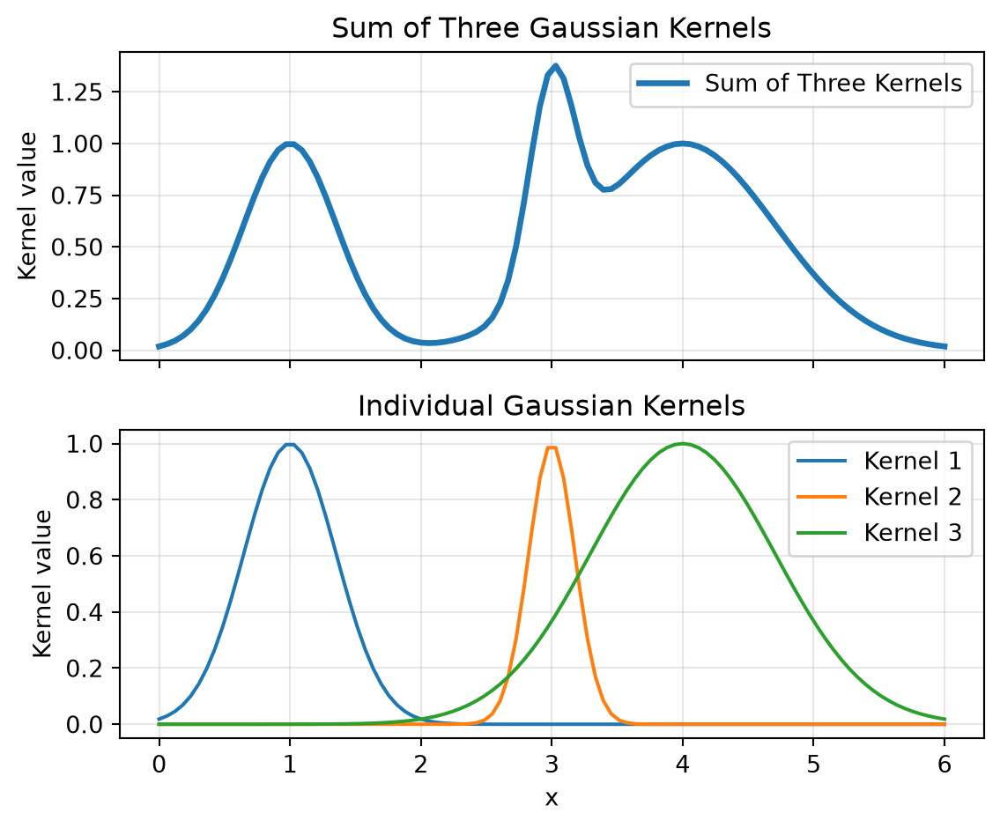
Some benefits of using kernel basis expansion include the ability to easily model local behaviors and flexibility of modeling using the \(c\) and \(h\) parameters.
6.2 Computation
6.2.1 Simulated Dataset
A simulated dataset was used to show the code implementation of each of the basis expansion methods. The dataset used was a noisy sine wave. The sine wave was created over a single period from 0 to \(2\pi\). Random noise was generated from a normal distribution with a mean of 0 and standard deviation of 0.2. This random noise was added to the noise wave to produce the example dataset. The dataset was then plotted.
import numpy as np
import matplotlib.pyplot as plt
# generate one period of a sine wave
np.random.seed(2)
x = np.linspace(0, 2 * np.pi, 100)
X = x.reshape(-1,1)
y_true = np.sin(x)
# add random noise
noise = np.random.normal(0, 0.2, size=len(x))
y = y_true + noise
# plot simulated data
plt.figure(figsize=(6, 4))
plt.scatter(x, y, alpha=0.7, label="Noisy sine wave")
plt.xlabel("x")
plt.ylabel("y")
plt.title("Linear Basis Expansion Examples")
plt.legend()
plt.show()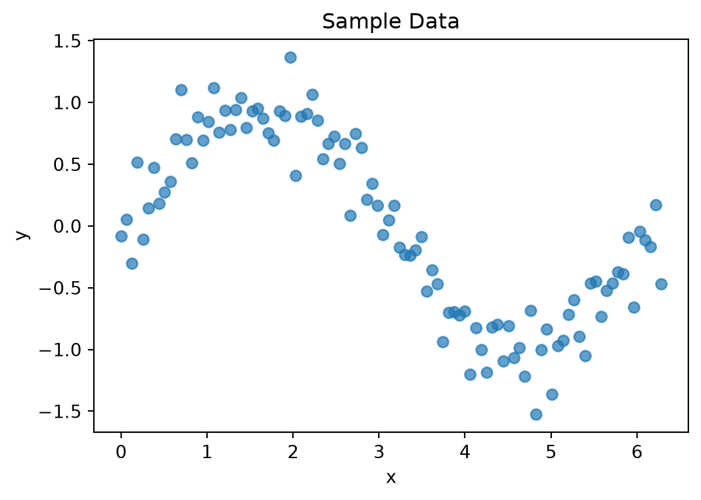
6.2.2 Polynomials
6.2.2.1 Natural Polynomials
The basic equation for a natural polynomial regression is as follows: \[ E[Y \mid x] = \beta_0 + \beta_1 x + \beta_2 x^2 + \cdots + \beta_d x^d \]
The sklearn PolynomialFeatures library was used for implementing the natural polynomial function. A 3rd degree polynomial was used for this example. The PolynomialFeatures library in sklearn was used to develop the design matrix. The polynomial model was then created and fit to the noisy sine wave data. The polynomial model was then used to make predictions along x.
from sklearn.preprocessing import PolynomialFeatures
from sklearn.linear_model import LinearRegression
def natural_poly_regression(X, y, degree):
# create polynomial features
nat_poly = PolynomialFeatures(degree=degree)
X_poly = nat_poly.fit_transform(X)
# fit linear regression model
model = LinearRegression()
model.fit(X_poly, y)
# generate predictions
y_pred_nat_poly = model.predict(X_poly)
return y_pred_nat_poly
y_pred_nat_poly = natural_poly_regression(X, y, degree=3)The noisy sine wave data nd natural polynomial model were then plotted to visualize the model fit.
# plot results
plt.figure(figsize=(6, 5))
plt.scatter(x, y, alpha=0.6, label="Noisy sine wave")
plt.plot(x, y_pred_nat_poly, label="Natural Polynomial model")
plt.xlabel("x")
plt.ylabel("y")
plt.title("Linear Basis Expansion Examples")
plt.legend()
plt.show()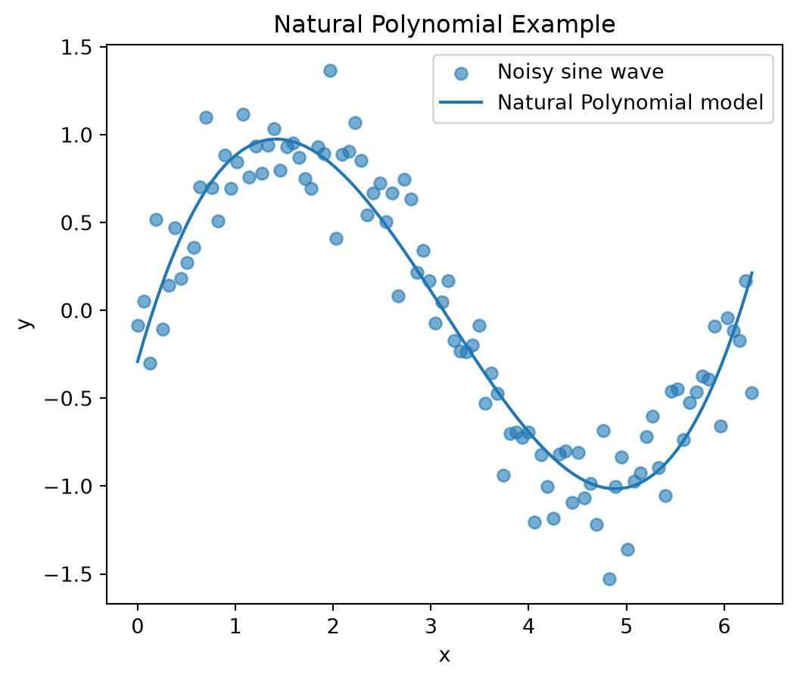
6.2.2.2 Bernstein Polynomials
The basic equation for a Bernstein polynomial regression is as follows: \[ E[Y \mid x] = \sum_{i=0}^{n} \beta_k B_{k,d}(x) \]
where \[ B_{k,d}(x) = \binom{d}{k} x^k (1-x)^{d-k} \]
The Bernstein equations require X to be scaled from 0 to 1. This is because the \(x\) and \((1-x)\) terms in the equation must both be positive. Therefore, x must be scaled from 0 to \(2\pi\) down to 0 to 1.
Next, a third degree Bernstein polynomial was selected as the regression approach. A function was written to calculate the general term in the Bernstein basis expansion. This function used the scipy special combination library for the combination portion of the Bernstein expansion. Then a for loop was used to create a marix containing each term of the Bernstein expansion.
The bern_terms list was then transformed from a list of arrays into a resulting design matrix. This was done using the numpy hstack function. This function takes each array in the bern_terms list and combines them horizontally to create an array with dimensions: (num of obs x poly degree+1).
Finally, the Bernstein regression model was created, fit, and used to generate predictions.
from scipy.special import comb
import numpy as np
from sklearn.linear_model import LinearRegression
def bernstein_regression(X, y, degree):
# rescale X to the range [0, 1]
X = np.asarray(X).reshape(-1, 1)
X_scaled = (X - X.min()) / (X.max() - X.min())
# create Bernstein basis functions
bern_terms = []
for k in range(degree + 1):
B_k = comb(degree, k) * X_scaled**k * (1 - X_scaled)**(degree - k)
bern_terms.append(B_k)
# combine basis functions into design matrix
X_bern = np.hstack(bern_terms)
# fit regression model
model = LinearRegression()
model.fit(X_bern, y)
# generate predictions
y_pred_bern = model.predict(X_bern)
return y_pred_bern
y_pred_bern = bernstein_regression(X, y, degree=3)The resulting Bernstein polynomial was then added to the plot for comparison.
# plot results
plt.figure(figsize=(6, 5))
plt.scatter(x, y, alpha=0.6, label="Noisy sine wave")
plt.plot(x, y_pred_nat_poly, label="Natural Polynomial model")
plt.plot(x, y_pred_bern, label="Bernstein model")
plt.xlabel("x")
plt.ylabel("y")
plt.title("Linear Basis Expansion Examples")
plt.legend()
plt.show()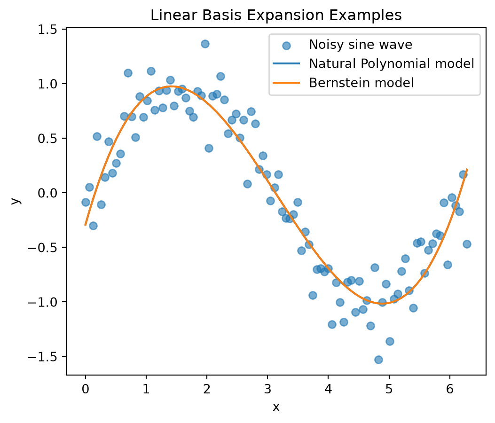
6.2.2.3 Orthogonal Polynomials
To construct an orthogonal polynomial basis expansion, the degree of the polynomial must first be selected. For this example, a third degree polynomial was selected. Next, the raw polynoial features were created using the PolynomialFeatures sklearn library. This approach is the same as was used for the natural polynomial basis.
Then the numpy QR decomposition was used to transform the raw polynomial features into orthonormal columns, which are orthogonal and have unit length. These orthonormal columns were used to fit the orthogonal polynomial model. Finally, predictions were developed over X using the fitted model.
from sklearn.linear_model import LinearRegression
from sklearn.preprocessing import PolynomialFeatures
import numpy as np
def orthogonal_poly_regression(X, y, degree):
# create raw polynomial features
orth_poly = PolynomialFeatures(degree=degree)
X_orth_poly = orth_poly.fit_transform(X)
# use numpy QR decomposition to turn raw polynomial features into orthonormal columns
# Q contains orthonomal columns
# R contains transformation information relating original matrix to Q
Q, R = np.linalg.qr(X_orth_poly)
# can check orthonormality of Q columns by running code below.
# .T is transpose
# @ is matrix multiplication]
# Q.T @ Q
# fit linear regression model
model = LinearRegression(fit_intercept=False)
model.fit(Q, y)
# generate predictions
y_pred_orth = model.predict(Q)
return y_pred_orth
y_pred_orth = orthogonal_poly_regression(X, y, degree=3)# plot results
plt.figure(figsize=(6, 5))
plt.scatter(x, y, alpha=0.6, label="Noisy sine wave")
plt.plot(x, y_pred_nat_poly, label="Natural Polynomial model")
plt.plot(x, y_pred_bern, label="Bernstein Polynomial Model")
plt.plot(x, y_pred_orth, label="Orthogonal Polynomial Model")
plt.xlabel("x")
plt.ylabel("y")
plt.title("Linear Basis Expansion Examples")
plt.legend()
plt.show()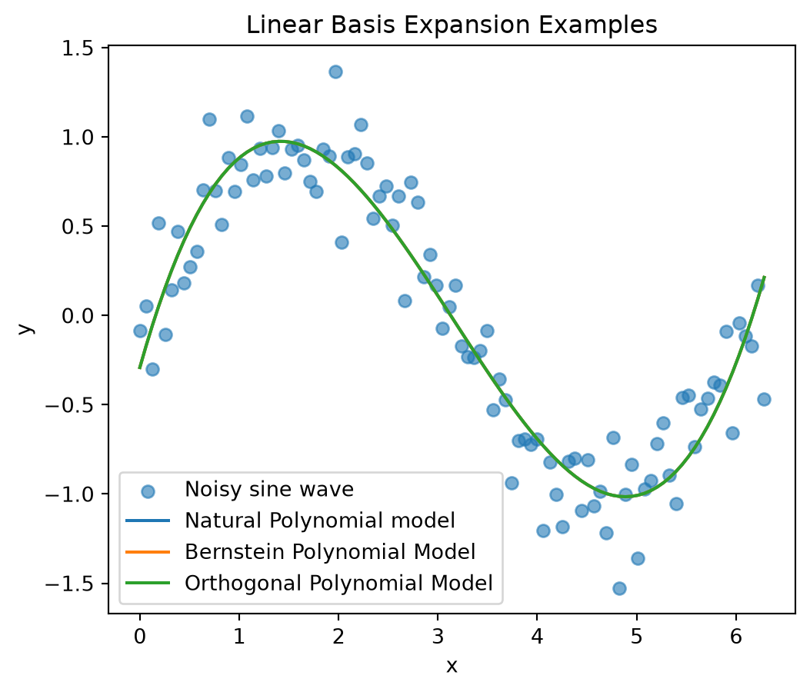
6.2.3 Splines
6.2.3.1 Linear Splines
The general equation for linear splines is the following: \[ f(x) = \beta_0 + \beta_1 x + \sum_{k=1}^{K} \beta_{k+1}(x - c_k)_+ \]
where \[ (x - c_k)_+ = \max(0, x - c_k) \]
\(c\) = location of knot \(k\) \(K\) + total number of knots
The first choice in using the linear spline basis is to select the number of knots used. For this example, 10 knots were selected. The knots were placed at equally spaced locations across X for simplicity. The sklearn SplineTransformer library was used for constructing the linear splines. The model was then fit and used to generated predictions.
from sklearn.preprocessing import SplineTransformer
from sklearn.linear_model import LinearRegression
def linear_spline_regression(X, y, num_knots):
# define linear spline basis
# degree=1 creates piecewise linear splines
# knots='uniform' places knots at uniform, equally spaced locations
spline = SplineTransformer(n_knots=num_knots, degree=1, knots='uniform')
# transform X into spline design matrix
X_lin_spline = spline.fit_transform(X)
# fit linear spline regression model
model_lin_spline = LinearRegression()
model_lin_spline.fit(X_lin_spline, y)
# generate predictions
y_pred_lin_spline = model_lin_spline.predict(X_lin_spline)
return y_pred_lin_spline
y_pred_lin_spline = linear_spline_regression(X, y, num_knots=10)Then the linear splines model was plotted for comparison to the other models.
# plot results
plt.figure(figsize=(6, 5))
plt.scatter(x, y, alpha=0.6, label="Noisy sine wave")
plt.plot(x, y_pred_nat_poly, label="Natural Polynomial model")
plt.plot(x, y_pred_bern, label="Bernstein Polynomial Model")
plt.plot(x, y_pred_orth, label="Orthogonal Polynomial Model")
plt.plot(x, y_pred_lin_spline, label="Linear Spline Model")
plt.xlabel("x")
plt.ylabel("y")
plt.title("Linear Basis Expansion Examples")
plt.legend()
plt.show()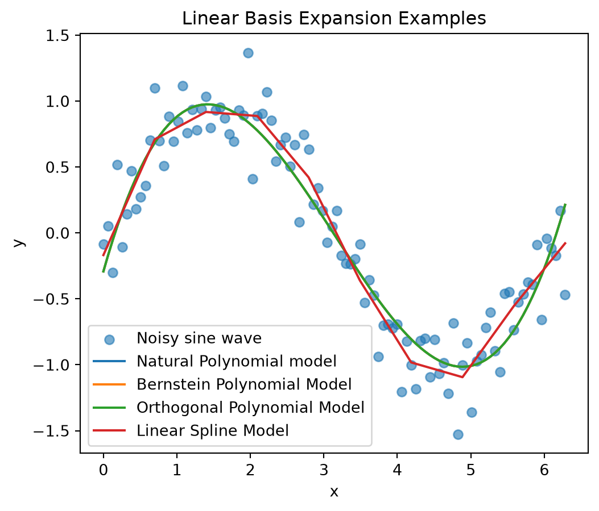
6.2.3.2 Cubic Natural Splines
The general equation for cubic splines is the following: \[ b_0(x) = 1 \] \[ b_1(x) = x \] \[ b_2(x) = x^2 \] \[ b_3(x) = x^3 \] \[ b_4(x) = (x-\kappa_1)_+^3 \] \[ \vdots \] \[ b_{3+K}(x) = (x-\kappa_K)_+^3 \]
Written in the linear format, the equation is as follows: \[ f(x) = \beta_0 + \beta_1 x + \beta_2 x^2 + \beta_3 x^3 + \sum_{k=1}^{K} \beta_{k+3}(x-\kappa_k)_+^3 \]
The cubic splines model was developed using the exact same approach as the linear splines, except that two parameters in the SplineTransformer library were revised. The degree parameter was set to 3 for a cubic function, and the extrapolation parameter was set to ‘continue’ to allow the curve to continue past the boundary knots.
from sklearn.preprocessing import SplineTransformer
from sklearn.linear_model import LinearRegression
def cubic_spline_regression(X, y, num_knots):
# define cubic spline basis
# degree=3 creates piecewise cubic splines
# knots='uniform' places knots at uniform, equally spaced locations
# extrapolation='continue' continues the outer cubic pieces beyond the boundary knots
spline = SplineTransformer(n_knots=num_knots, degree=3, knots='uniform', extrapolation='continue')
# transform X into spline design matrix
X_cub_spline = spline.fit_transform(X)
# fit cubic spline regression model
model_cub_spline = LinearRegression()
model_cub_spline.fit(X_cub_spline, y)
# generate predictions
y_pred_cub_spline = model_cub_spline.predict(X_cub_spline)
return y_pred_cub_spline
y_pred_cub_spline = cubic_spline_regression(X, y, num_knots=10)The cubic splines model was included on the noisy sine wave plot for comparison.
# plot results
plt.figure(figsize=(6, 5))
plt.scatter(x, y, alpha=0.6, label="Noisy sine wave")
plt.plot(x, y_pred_nat_poly, label="Natural Polynomial model")
plt.plot(x, y_pred_bern, label="Bernstein Polynomial Model")
plt.plot(x, y_pred_orth, label="Orthogonal Polynomial Model")
plt.plot(x, y_pred_lin_spline, label="Linear Spline Model")
plt.plot(x, y_pred_cub_spline, label="Cubic Spline Model")
plt.xlabel("x")
plt.ylabel("y")
plt.title("Linear Basis Expansion Examples")
plt.legend()
plt.show()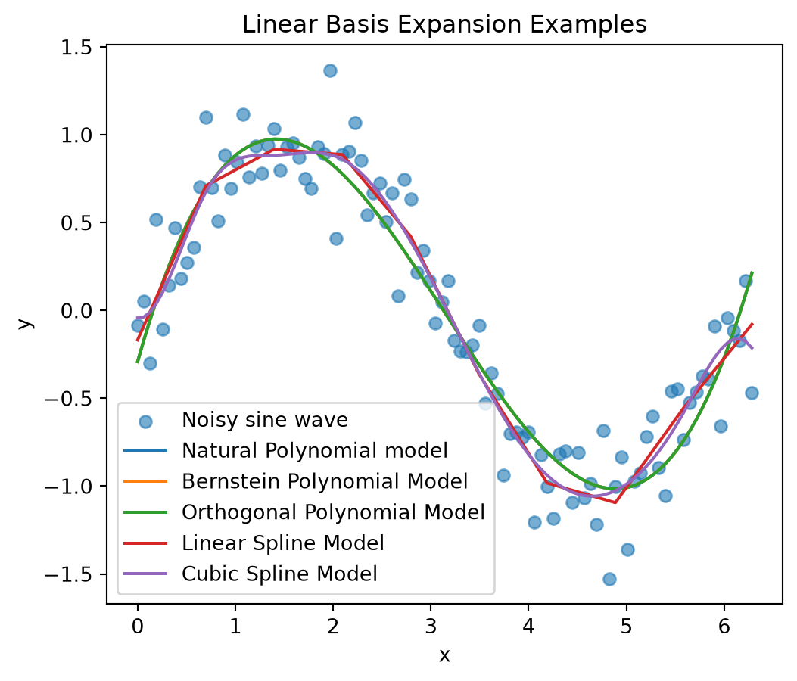
6.2.3.3 Restricted Cubic Splines
The restricted cubic splines model was constructed using the patsy dmatrix library, which is used for constructing the design matrix. Similar to the other spline models, the sklearn LinearRegression library was used for fitting the model.
Within the dmatrix function, cr stands for cubic regression. This approach constructs basis functions that satisfy the natural spline boundary constraints, which force the combined fitted curve to have a second derivative of 0, making the tails linear, which is a key difference of this model compared to the cubic splines. df defines the number of knots. -1 removes the intercept column from the design matrix. X.ravel() converts x to a one dimensional array to be used for fitting the model.
The model was then fit and used to generated predictions.
from patsy import dmatrix
from sklearn.linear_model import LinearRegression
def restricted_cubic_spline_regression(X, y, num_knots):
# create restricted cubic spline basis
# cr() creates a natural cubic spline basis with linear tails
X_rcs = dmatrix(f"cr(x, df={num_knots}) - 1", {"x": X.ravel()})
# fit linear regression model
model_rcs = LinearRegression()
model_rcs.fit(X_rcs, y)
# generate predictions
y_pred_rcs = model_rcs.predict(X_rcs)
return y_pred_rcs
y_pred_rcs = restricted_cubic_spline_regression(X, y, num_knots=10)The restricted cubic splines model was included on the noisy sine wave plot for comparison.
# plot results
plt.figure(figsize=(6, 5))
plt.scatter(x, y, alpha=0.6, label="Noisy sine wave")
plt.plot(x, y_pred_nat_poly, label="Natural Polynomial model")
plt.plot(x, y_pred_bern, label="Bernstein Polynomial Model")
plt.plot(x, y_pred_orth, label="Orthogonal Polynomial Model")
plt.plot(x, y_pred_lin_spline, label="Linear Spline Model")
plt.plot(x, y_pred_cub_spline, label="Cubic Spline Model")
plt.plot(x, y_pred_rcs, label="Restricted Cubic Spline Model")
plt.xlabel("x")
plt.ylabel("y")
plt.title("Linear Basis Expansion Examples")
plt.legend()
plt.show()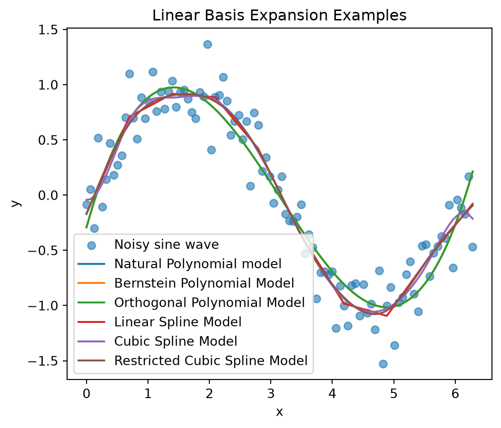
6.2.4 Kernels
The rbf_kernel library from sklearn was used to construct the kernel functions. A total of 10 kernel functions were used. Their centers were placed evenly across the range of x, from 0 to \(2\pi\). The hyperparameter \(h\) was set to 0.5 for all kernel functions.
Then the \(h\) hyperparameter was converted to the \(\gamma\) hyperparameter needed for the kernel function in the rbf_kernel library. Then the kernel functions were calculated.
from sklearn.metrics.pairwise import rbf_kernel
from sklearn.linear_model import LinearRegression
import numpy as np
def kernel_regression(X, y, M, h):
# place centers evenly across x
X = np.asarray(X).reshape(-1, 1)
centers = np.linspace(X.min(), X.max(), M)
C = centers.reshape(-1, 1)
# convert h to gamma hyperparameter from sklearn rbf_kernel library
gamma = 1 / (2 * h**2)
# calculate kernel functions
X_kernel = rbf_kernel(X, C, gamma=gamma)
# fit model
model = LinearRegression()
model.fit(X_kernel, y)
# make predictions
y_pred_kern = model.predict(X_kernel)
return y_pred_kern
y_pred_kern = kernel_regression(X, y, M=10, h=0.5)Finally, the kernel model was fit and used to make predictions. The resulting model was included on the plot with the noisy sine data to show its effectiveness.
# plot results
plt.figure(figsize=(6, 5))
plt.scatter(x, y, alpha=0.6, label="Noisy sine wave")
plt.plot(x, y_pred_nat_poly, label="Natural Polynomial model")
plt.plot(x, y_pred_bern, label="Bernstein Polynomial Model")
plt.plot(x, y_pred_orth, label="Orthogonal Polynomial Model")
plt.plot(x, y_pred_lin_spline, label="Linear Spline Model")
plt.plot(x, y_pred_cub_spline, label="Cubic Spline Model")
plt.plot(x, y_pred_rcs, label="Restricted Cubic Spline Model")
plt.plot(x, y_pred_kern, label="Kernel model")
plt.xlabel("x")
plt.ylabel("y")
plt.title("Linear Basis Expansion Examples")
plt.legend()
plt.show()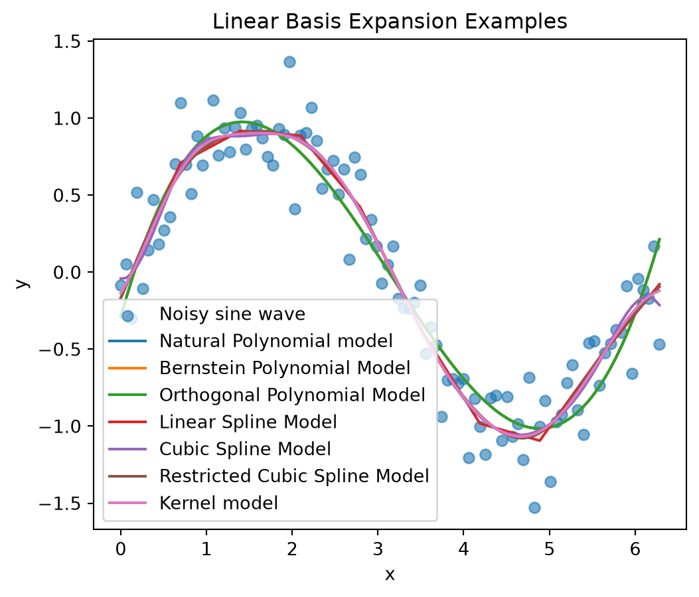
A second simulated dataset was also used to compare the seven different linear basis expansion models. This one was a noisy sigmoid function.
# generate x values
np.random.seed(3)
x = np.linspace(0, 10, 100)
X = x.reshape(-1, 1)
# create sigmoid function
y_true = 10 / (1 + np.exp(-1.5 * (x - 5)))
# add random noise
noise = np.random.normal(0, 0.5, size=len(x))
y = y_true + noise
# plot dataset
plt.figure(figsize=(6, 5))
plt.scatter(x, y, alpha=0.6, label="Noisy sigmoid data")
plt.plot(x, y_true, label="Actual sigmoid")
plt.xlabel("x")
plt.ylabel("y")
plt.title("Linear Basis Expansion vs. Noisy Sigmoid Dataset")
plt.legend()
plt.show()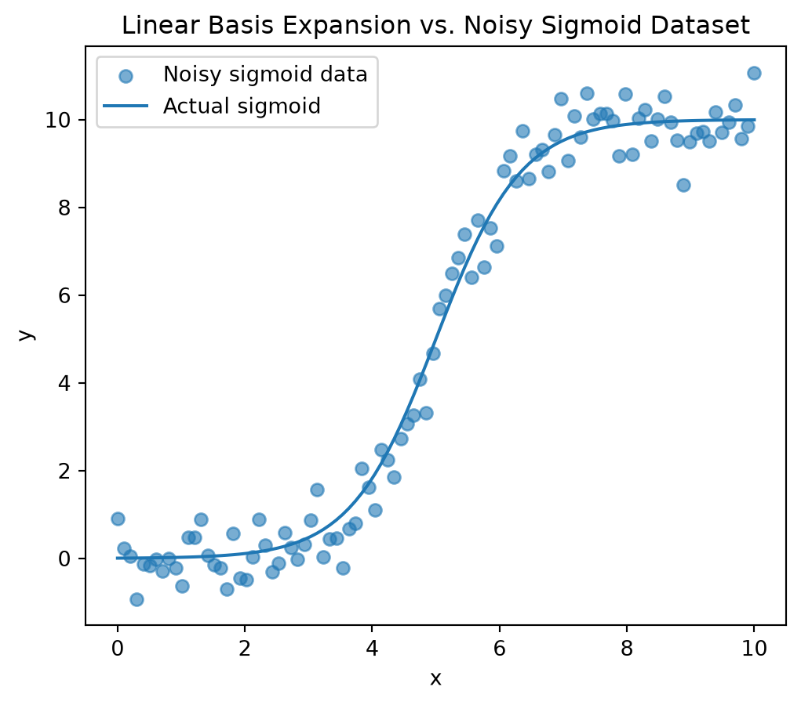
Next, all 7 models were developed.
y_pred_nat_poly = natural_poly_regression(X, y, degree=3)
y_pred_bern = bernstein_regression(X, y, degree=3)
y_pred_orth = orthogonal_poly_regression(X, y, degree=3)
y_pred_lin_spline = linear_spline_regression(X, y, num_knots=10)
y_pred_cub_spline = cubic_spline_regression(X, y, num_knots=10)
y_pred_rcs = restricted_cubic_spline_regression(X, y, num_knots=10)
y_pred_kern = kernel_regression(X, y, M=10, h=0.5)Finally, all 7 models were plotted for comparison.
# plot results
plt.figure(figsize=(6, 5))
plt.scatter(x, y, alpha=0.6, label="Noisy sigmoid data")
plt.plot(x, y_true, label="Actual sigmoid")
plt.plot(x, y_pred_nat_poly, label="Nat poly")
plt.plot(x, y_pred_bern, label="Bern poly")
plt.plot(x, y_pred_orth, label="Ortho poly")
plt.plot(x, y_pred_lin_spline, label="Lin spline")
plt.plot(x, y_pred_cub_spline, label="Cub spline")
plt.plot(x, y_pred_rcs, label="Restr cub spline")
plt.plot(x, y_pred_kern, label="Kernel")
plt.xlabel("x")
plt.ylabel("y")
plt.title("Linear Basis Expansion vs. Noisy Sigmoid Dataset")
plt.legend()
plt.show()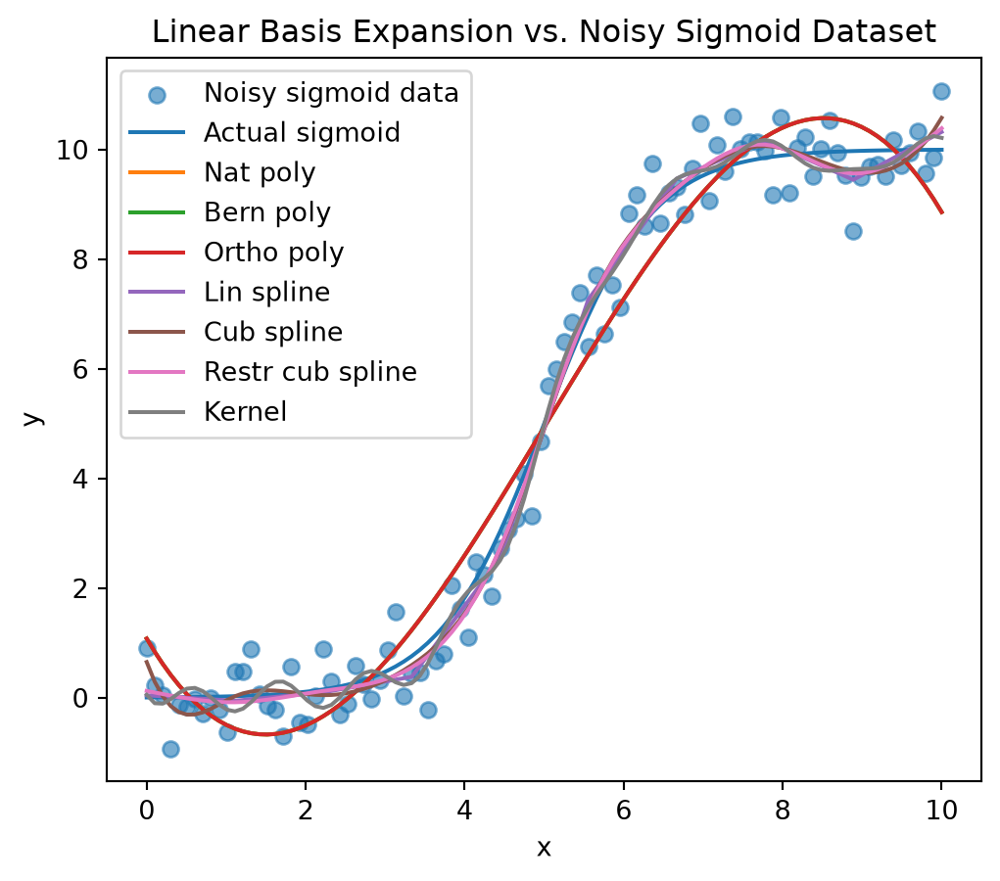